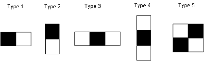
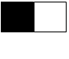
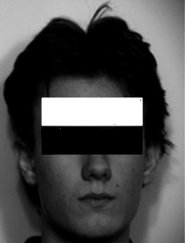
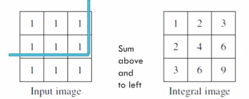
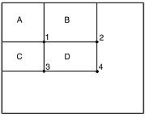
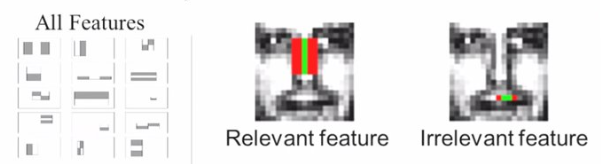
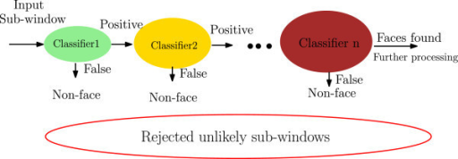

Home | Viola Jones Face Detection Algorithm Explained
|
Posted on 27th September 2018 |
This is a brief tutorial on Viola-Jones face detection algorithm. If you haven't watched the video shown below, I suggest you to watch it first. |
| Video lecture on Viola Jones Face Detection Algorithm. |
| Introduction |
| In 2001, Paul Viola and Michael Jones proposed a framework called Viola–Jones object detection framework. It can be trained to detect variety of objects of different classes. However it was primarily developed for face detection. |
| Why Viola-Jones face detection Algorithm? |
| Viola–Jones algorithm is very robust. It has a very high detection rate. The algorithm is fast enough to be implemented in real time applications. And, If we optimize our implemented code, we can make it run much more faster. |
| Viola-Jones Face detection algorithm in layman terms |
| A face detection algorithm is designed by giving input as some faces and non faces and a training classifier. A training classifier is something which identifies a face from the inputs. We train a classifier using faces and non faces and once the training is done, the data that we have got can be used to detect faces from an image. To put this in more simpler words, we show some images of face to an alien who has no previous knowledge of what the human face is. We show some hundreds or thousands of human faces and tell it that it is a human face. And similarly we again show some hundreds or thousands of non faces (or non human faces) and tell it that these are non-faces. Once that alien is trained to identify the features, we give it an input image and it is then able to classify it as a face or a non face. |
| Concept |
| By implementing Viola-Jones face detection algorithm, we are trying to train our computer to understand what a face is and/or what a non face is. Once the computer is trained, it extracts certain features and this data is stored in a file. All we do is, we take that file, when we get a new input image, check the features from that file and apply each feature set to the input image. There are various stages of feature comparison. If it passes through each stages of that feature comparison, then a face is detected in the input image. Hope you've got the basic idea of Viola-Jones face detection algorithm. Lets go deep. |
| Haar Features |
| Haar Features are basically similar to the convolution kernels, which are used to detect the presence of the features in an image. Consider the following image showing the Haar features used in Viola-Jones face detection algorithm. |
|  |
| 1. Haar features |
A black region is replaced by +1 and the white region is replaced with -1. When we apply this mask to an input image, we just subtract the pixel values under white region from the pixel values under black region and the output will be a single value. So what we understand from this is that, all these Haar features have some sort of resemblance to some facial features or characteristics of faces. So, Haar features represent some characteristics of a face. Viola-Jones algorithm uses a 24x24 sub-window from an image, and it calculates these features all over the image. |
|  |
| 2. a simple 2-pixel Haar feature |
| Let us say you have a feature as shown above which is of 2 pixel dimension. This feature is applied at the top-left pixel of the input image and the value is calculated. Then it is shifted ahead right by one unit(pixel) and again the value is calculated. And so on this 2 pixel feature is moved across the entire input image till we end up reaching bottom corner pixel of the image. Then we increase the size of this feature. We make it 2 pixel white and 2 pixel black, resulting in a 4 pixel size feature. We apply this feature to the image all over again by shifting it pixel by pixel and we get the values. Further, we make it 4 pixel white and 4 pixel black, and again apply it to the image to get values. Similarly same thing is done by taking all the other features and is applied to the image to to get values. Considering all the variation of size, position of all these features, we end up calculating about 160,000+ features in this 24x24 window, as each single type of feature is repeated all over the image in all scales, sizes and positions; when everything combined, we have a many combinations. Now for such a case, we need to evaluate a huge set of features for every 24x24 sub-window in any new image. For real time face detection this doesn't look practical. So, we eliminate the redundant features (the features which are not useful) and select only those features which are very very useful for face detection. This is done by Adaboost. |
| Adaboost |
| Adaboost eliminates all the redundant features and it narrows it down to several thousands of features that are very useful. Now before going towards Adaboost, lets talk about an important concept called Integral Image. As we know, in the algorithm, every single time we need to sum up all the pixels in the black region and then sum up all the pixels in the white region. Whenever we want to compute the sum of any region say black region, this is computationally inefficient if computing for real time because it will be a lengthy process for thousands of features. So Viola-Jones have came up with an idea which solves this problem. The basic Idea behind integral image is, say we want to calculate area of a black patch in the below image, we do not need to sum up all the pixels, rather, we use the corner values of this patch and do a simple calculation which is described in the coming section. |
|  |
| 3. feature regions (B/W patches) in an image |
In an integral image the value at pixel (x,y) is the sum of pixels above and to the left of (x,y). Let's say this is a given input image and we want to calculate the integral image. |
|  |
| 4. an example of an integral image |
| To get a new value at a particular pixel we sum up all the pixel values falling in top and left region. The resultant is an Integral Image. The integral image allows for the calculation of sum of all pixels inside any given rectangle using only four corner values of the rectangle. |
| Consider this example |
|  |
| 5. integral image |
| The Integral sum inside rectangle D, we can compute as : ii(4) + ii(1) - ii(2) - ii(3). Using the integral image representation one can compute the value of any rectangular sum in constant time. Lets get back to Adaboost. How does it remove the redundant features? We have all the combinations of sizes of all the 160,000+ features. But are all of them relevant? Definitely No. For example the below feature, which is used to detect bridge of the nose, gives us maximum values only on the nose bridge region of the face. |
|  |
| 6. Haar features |
| For rest of the face region it is irrelevant. This relevance and irrelevance is determined by Adaboost. It selects only few features which are relevant. Adaboost is a machine learning algorithm which helps in finding only the best features among all the 160,000+ features. After these features are found, a weighted combination of all these features are used in evaluating and deciding any given window has a face or not. In mathematical terms, it gives weight to each feature denoted by α. And the linear combination of all these weighted features is used to determine whether face is detected or not. F(x) = α1f1(x) + α2f2(x) + α3f3(x) + ... Here F(x) is called a strong classifier, and the αnfn(x) are called weak classifiers. A weak classifier is a good feature or a relevant feature extracted by Adaboost, which at least performs better than random guessing. The output of a weak classifier is either 1 or 0. It results in 1 when it has performed well and identified the feature on the input image. Generally around 2500 features are used to form a strong classifier. |
| Cascading |
| The computed strong classifier is also called a detector. The basic principal of Viola-Jones Face detection algorithm is to scan the detector many times through the same image each time with a new size. Lets say we have an input image of 640X480 pixels resolution, we need to move this 24x24 window all through the image. For every 24x24 window, we need to evaluate 2500 features that we obtain after performing Adaboost and take a linear combination of all those 2500 outputs to detect whether it exceeds a certain threshold or not, and then decide whether a face is detected or not. Now even though an image is detected in an input image, an excessive large amount of evaluated sub-windows would still be negative. In simpler terms, instead of using these 2500 features all the time on every single 24x24 window, we use cascades. Out of 2500 features, we make sets of features. Lets say first 10 features are kept in one classifier, then next 10-20 features in another classifier and so on. Though the complexity is increased, but the advantage is that, when we apply this cascade on a certain window of 24x24 size on an given image, based on the output of the first classifier, we can check if it is a face or not. These 2500 features are arranged in a cascading manner as shown below. |
|  |
| 7. Cascades |
| With this an input can be rejected quickly from first or first few stages instead of evaluating all the 2500 features. In real time when we need to detect faces, this gives us a lot of computational advantage. |
| |
| |